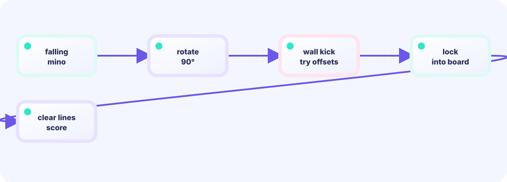

Detect landing
If the next cell is the floor or occupied, the piece cannot descend. Write it into the board array, not only onto the screen.
board[y][x] = true★★★☆☆ / PLAYABLE
Merge the falling shape into the board, remove full rows, and compact above.
FIRST-TIME READER
Find where this one line is used, then follow how its value changes on screen. This is the shared Update → Draw skeleton for the whole path; the numbered steps below add one system at a time.
ONE RULE TO TRACE
Match the explanation to this line, then test the change in the game.
lockPiece(); copy(board[1:y+1],board[0:y])
PLAYABLE / WEBASSEMBLY
Move with ← → or the screen buttons. Drop with ↓ or Space. Filling each two-cell gap clears its row.
DEEP DIVE / LOCK AND COMPACT
The instant a piece lands, its two cells are locked into board. Then inspect every row, skip full rows, and copy every row worth keeping downward.
If the next cell is the floor or occupied, the piece cannot descend. Write it into the board array, not only onto the screen.
board[y][x] = trueKeep a row if even one cell is empty. Only a row with all eight cells set to true counts as cleared.
full = full && board[y][x]Use read for the inspected row and write for its destination. Skip full rows and copy only the others downward.
board[write] = board[read]TRY IT / FULL ROW
Gold rows are completely filled. Clear Rows removes them and drops everything above. Scoring in falling-block games starts from this “is the row full?” test.
Several full rows clear together in one pass.
THE FULL-ROW RULE
if every cell is filled → clearthenpack remaining rows downFeed the cleared count into a score table for singles through Tetrises.
IN THE REAL GAME
Copy only non-full rows to write, then fill every unused row at the top with an empty row.
write := rows - 1
for read := rows - 1; read >= 0; read-- {
if rowIsFull(read) { continue }
board[write] = board[read]
write--
}
for write >= 0 { board[write] = emptyRow; write-- }WHY LOCK FIRST?
If you scan first, the falling piece's final two cells are still missing.
WHY BOTTOM-UP?
Writing from the bottom never destroys an upper row that has not been read yet.
TRY NEXT
Award 100 for one row but 300 for two cleared together.
FEEDBACK